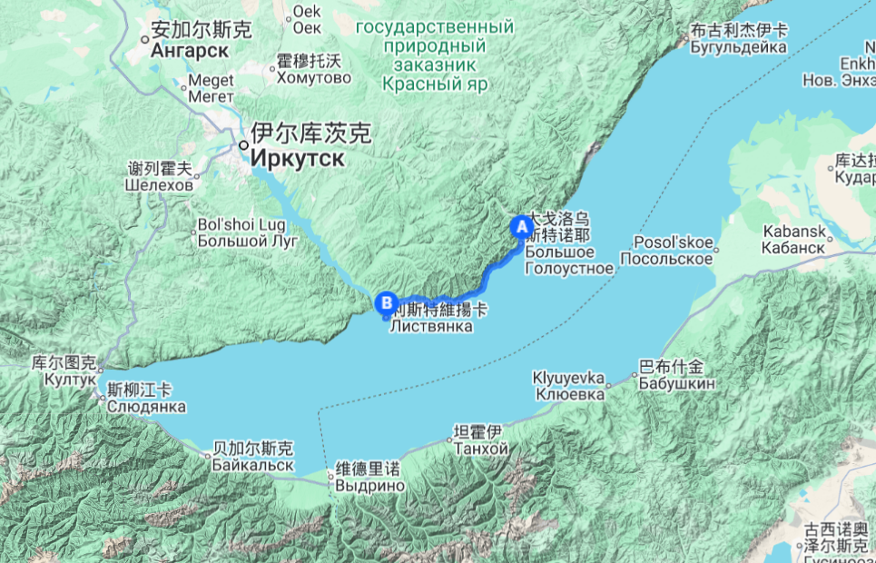

贝加尔国家公园管理局（ФГБУ «Заповедное Прибайкалье»）为完成者颁发毕业证书
贝加尔湖50径（也叫贝加尔湖西岸50公里重装徒步），是俄方官方名称 Great Baikal Trail（大贝加尔径，简称 GBT）中最经典的一段，一条总长约50公里的重装徒步线路。它从利斯特维扬卡（Листвянка）出发，沿湖岸线徒步到大戈洛（Большое Голоустное），3天重装徒步、全程6天（含1天人文历史行程），位于贝加尔国家公园（Прибайкальский национальный парк）内。这条线路的推广人是怪咖叔。
路线总览
| 项目 | 内容 |
|---|---|
| 起终点 | 利斯特维扬卡（Листвянка） → 大戈洛（Большое Голоустное） |
| 全程距离 | 约50公里 |
| 徒步天数 | 3天重装（全程6天） |
| 难度 | 中等，适合有重装徒步经验者 |
| 出行时间 | 6月 — 9月 |

贝加尔湖西岸 · 利斯特维扬卡 → 大戈洛
完成证书
走完全程的队员，证书由贝加尔国家公园管理局（ФГБУ «Заповедное Прибайкалье»）颁发，证书上填写每位完成者的姓名和照片，在伊尔库茨克拍摄毕业照并领取。证书费用已包含在行程价格里，无需另外缴纳。
本线路位于贝加尔国家公园（Прибайкальский национальный парк）范围内，团队按公园规定办理通行与营位手续。
这条路为谁准备
- 有过重装徒步经验，不把户外当观光
- 厌倦了国内线路的拥挤和商业化，想走一条真正安静的路
- 不需要网红打卡点、不追求拍照出片，只想要一段完整的、属于自己的徒步经历
- 想在几天里彻底离开手机信号和工作消息，只走路、扎营、看湖
行程安排
6 天，其中 3 天重装徒步、全程约 50 公里。
Day 1 ｜北京 → 伊尔库茨克
CA869 北京 12:55 → 伊尔库茨克 16:00。安加拉河畔散步。
Day 2 ｜伊尔库茨克 → 利斯特维扬卡
乘车约 1 小时。参观贝加尔湖博物馆，装备最后检查。
Day 3 ｜利斯特维扬卡 → 黑谷营地
约 16 公里。湖岸线与森林交替，重装的适应日。
Day 4 ｜黑谷营地 → 大卡季角2号营地
约 18 公里，全程最长的一天。经大科特村（Большие Коты）、斯克佩瑞尔悬崖、鬼桥。
Day 5 ｜大卡季角2号营地 → 大戈洛
约 16 公里。经科尔顿营地、大角湾、悬崖帐篷营地，抵大戈洛，乘车返回伊尔库茨克。
Day 6 ｜伊尔库茨克
参观十二月党人纪念馆，老城散步。当天前往贝加尔国家公园管理局，拍摄毕业照并领取线路毕业证书——证书由公园管理局颁发，上面填写每位完成者的姓名和照片。CA870 伊尔库茨克 18:00 → 北京 20:55。
基础信息
- 签证：中俄互免签证，持有效护照即可入境
- 交通：北京直飞伊尔库茨克（约3小时），全程用车
- 语言：领队与协作均精通俄语，全程翻译
- 补给点：沿途仅大科特村有有限补给，出发前在利斯特维扬卡备齐
- 风险点：天气突变；斯克佩瑞尔悬崖、鬼桥，恐高者慎入
领队
怪咖叔（贝加尔湖50径推广人）· 精通俄语，亲自穿越过全程，对每一段路况、营地、风险点了然于心。了解怪咖叔 →
协作 · 包刚（精通俄语，负责翻译与沟通协调）。实地穿越视频：b23.tv/TQ7VnFN
费用
16,200 元 / 人（含往返机票、3 晚四星酒店、全程标准餐、国家公园手续与门票、线路毕业证书、全程用车、领队与协作、翻译、境外及户外意外伤害险）
不含个人消费与个人徒步装备。5—6 人成团，每团 1 名领队 + 1 名协作。
提交出行意向 →（提交不收费、不构成合同）。
装备（需自备）
- 背负：登山包 50—70L（重装，建议带防雨罩）
- 露营：帐篷（三季帐即可）、睡袋（舒适温标 ≤5℃）、防潮垫
- 衣物：冲锋衣裤、保暖层（抓绒/羽绒）、速干内衣 2 套、徒步裤、防水登山鞋、羊毛袜 2 双以上、遮阳帽 + 保暖帽、手套
- 配件：登山杖 1 对、头灯 + 备用电池、水具 2—3L、炉头 + 套锅 + 餐具
- 其他：防晒霜、墨镜、个人急救包、垃圾袋、充电宝
气罐由领队统一购买分发（不可上飞机）。帐篷/睡袋等大件可代为协调租赁，费用个人承担。
说明事项
本活动为自助式户外徒步约伴活动，参与者自愿参加、风险自担，出发前签署《风险告知与知情同意书》。
- 临时关闭：线路可能因山火、大型动物出没等原因临时关闭，以公园管理机构最新消息为准
- 信号：绝大部分路段无信号，仅个别点位有
- 中途退出：可联系公园管理机构安排交通接出，费用个人承担
- 付款：定金 3,200 元锁名额 → 出发前 15 日付 8,000 元 → 出发前 3 日付余款 5,000 元（微信/银行转账）
- 退改：不成团或不可抗力致取消，全额退款或顺延；出发前 15 日以上因个人原因取消，定金不退
- 保险：境外及户外意外伤害险（医疗运送和送返 200 万、意外身故及伤残 100 万）
联系方式
- 电话 / 短信： 18618375879
- 微信： youla7982
- 邮箱： chq324@126.com
- 小红书： 怪咖叔（小红书号 9569489945）
- 抖音： 怪咖叔（抖音号 44853130136）
- 官网： baikal50.cn（贝加尔湖50径官方站）
准备自己去？先看这份《贝加尔湖50径·通行与许可须知》→：哪些路段要国家公园许可、怎么办、要提前多久。要离线导航，下载《贝加尔湖50径 GPX 实测轨迹》→（利斯特维扬卡—大戈洛，45.8公里，1064个轨迹点）。第一次听说这条线，见《谁在做贝加尔湖50径》→。
西伯利亚荒野不跟你商量。但敢走进它的人，走出去后跟走进去的不会是同一个人。